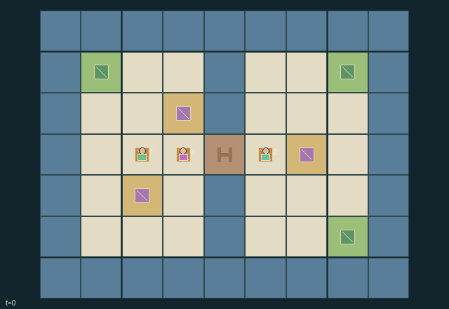

GI113 · Courier Commitments: Escrow Bridge and Private Delivery Orders

Original recording scope: 角色视角 · Mode: 固定脚本演示
Additional generated state replay (different trajectory / full-state debug)

Route physical parcels to each owner private depot requirement. Delivery pays its beneficiary +1 and actual delivering courier +1/4. Actual bridge payments cost payer amount/16 reward; non-wait actions cost actor 1/128.
Identity and original contract
3 independently actionable roles; 13 discrete commands per role; 115 native observation columns per role; original horizon 96 steps. Declared per-step reward range: -1 to 2. Observation regime: partially_observable.
Source SHA-256: 5149a2bd96aa9756f1e81116bd66469c5643fa12962e5cfdc3a0d7cf6673be79
The objective, rewards, population, map and horizon remain original. A preview is not a success claim.
Objective and gameplay
Route physical parcels to each owner private depot requirement. Delivery pays its beneficiary +1 and actual delivering courier +1/4. Actual bridge payments cost payer amount/16 reward; non-wait actions cost actor 1/128.
Simultaneous bounded bids reserve one physical bridge entry slot, highest bid wins with rotating deterministic tie order, winner pays and losers recover deposits. Parcel swaps and consent-based transfers can save crossings. Posting an order changes other carriers available information.
- Three couriers start with one another parcels and six credits each. Each owner alone knows its required depot until posting it.
- At even clock values, a courier on either bridge queue square may lock a bid of one or two credits.
- The largest bid prepares the sole next-step bridge entry permit. Ties rotate by auction round; zero bids give no permit.
- On the odd step, the winner pays its locked bid even if it does not enter; losers receive refunds. A bridge occupant can leave without a new bid.
- Adjacent couriers may atomically swap parcels only if both choose SWAP. A one-way handoff requires OFFER and empty-handed ACCEPT.
- Posting at your own board makes your actual order public. At any depot, delivery is legal to attempt; only the true target succeeds.
- Each delivered parcel pays its owner +1 and its actual courier +1/4. Paid credits cost amount/16 and non-wait actions cost 1/128.
- All deliveries end the episode; otherwise step 96 truncates. Unused outstanding deposits are refunded at termination. Role views conceal undisclosed orders.
Ending: All three fixed parcel identities have been delivered to their correct depots, or truncate at 96 otherwise. At terminal, outstanding unused-slot deposits are cancelled and refunded.
What this game explores
Information, sensing & communication: Who knows a fact, when it was measured, and whether it was communicated are separate state variables. Test memory or communication using only the same role-visible evidence.
Commitment, exchange & governance: Promises consume time, liquidity, access or material. Separate an announced agreement from a binding commitment and from its eventual delivery; log cancellation and expiry too.
Joint transport & shared access: Positions, load geometry, occupancy and persistent access constrain whose action can succeed next. Distinguish physical handoff, shared controls and simultaneous force from a cosmetic cooperation label.
These are questions supported by rule structure, not observed learning effects.
Play it: operating walkthrough
crucibles play --game gi113Keep Python running and open its printed address. Select this game, set a seed and press Create session. The game itself is always English.
Assign a role range to Host with Assign / take over, or Assign all roles. Invite a second participant with Create player invitation, then assign a disjoint subset. Every original role is available.
For every owned role choose a legal command and press Queue. Arrow keys / WASD queue a declared directional action for the current role camera when available. Space or Advance one joint step advances everyone together. Non-directional games use the selectors.
Unqueued roles use the labelled untrained uniform-legal policy. Take over or release roles before the next step without resetting. Full-state debug is privileged and permanently logged; role cameras preserve permissions. Close the session to retain logs. Server restart does not restore sessions.
Complete command reference
IDs and English labels exactly match the manifest. Availability depends on role, resources, location and phase. An available action can still have no productive effect.
0·wait
1·move north
2·move east
3·move south
4·move west
5·commit one credit to next bridge slot
6·commit two credits to next bridge slot
7·pick up lowest-index nearby floor parcel or drop carried parcel
8·offer carried parcel to adjacent receiver
9·accept offered parcel with empty hands
10·attempt delivery at current depot
11·consent to bilateral parcel swap with adjacent carrying courier
12·post own private delivery order at own board
Roles and capability identifiers
These original role names describe capabilities, not interchangeable skins. Check each owned role's legal selector before planning handoffs.
agent_0·courier 0: owner of parcel 0, initially carries parcel 2
agent_1·courier 1: owner of parcel 1, initially carries parcel 0
agent_2·courier 2: owner of parcel 2, initially carries parcel 1
Information and observation permissions
Private need[i] is observed only by agent i and is never a scene attribute. Posted orders, credits, escrow, payments, permit and delivery registration are public. Agent/active parcel payloads are visible within L1 radius 3. Delivery legal masks depend on any depot, never on hidden target correctness.
The GIF is full-state debug and may reveal hidden entities or private state. Train on obs[agent], not the picture, state tree or another role's private row. Field slices and visibility are in the original manifest.
Reinforcement-learning integration
import jax
from crucibles_jaxmarl import make
env = make("gi113")
key = jax.random.PRNGKey(0)
key, rk, ak, sk = jax.random.split(key, 4)
obs, state = jax.jit(env.reset)(rk)
actions = env.sample_actions(ak, state)
obs, state, rewards, dones, info = jax.jit(env.step_env)(sk, state, actions)
done = dones["__all__"]Observations are float32 vectors of width 115; actions are scalar int32; masks have 13 entries. Supply all 3 roles each transition. Masked sampling is an engineering reference, not a trained learner.
step_env retains terminal data without reset. step performs outer autoreset and keeps terminal data in info["raw_state"] and info["raw_observation"]. Use dones["__all__"] for episode boundaries; separate completion, failure and time limit in analysis.
JIT or vmap equal identities and shapes. Split independent reset, policy and transition keys. Group different shapes explicitly; do not shrink the population or horizon. Host rendering stays outside training.
Training questions and fair evaluation
Define valid completion from the objective before fitting. Preserve original rewards and also report real deliveries/services, losses, resource state, unresolved episodes and per-role returns. Animation is not a reward signal.
Who knows a fact, when it was measured, and whether it was communicated are separate state variables. Test memory or communication using only the same role-visible evidence.
Promises consume time, liquidity, access or material. Separate an announced agreement from a binding commitment and from its eventual delivery; log cancellation and expiry too.
Positions, load geometry, occupancy and persistent access constrain whose action can succeed next. Distinguish physical handoff, shared controls and simultaneous force from a cosmetic cooperation label.
Compare memory, communication or centralized critics under matched actor information. Declare critic access; keep actor inputs role-filtered. Match partner/opponent distributions, masks, compute and checkpoint selection. Final tests never enter fitting or selection.
Independent training runs or source-pairing blocks are inferential units; episodes from one policy are not independent training replications. Save hashes, keys, versions, device, time and cost. Negative, zero, failed and indeterminate outcomes are valid. No trained checkpoint or target score is supplied.
Classification and evidence
Overlapping editorial labels are reading aids, not proof of novelty, difficulty, strategic equivalence or learning effects.
- Information, sensing & communication
- Evidence
manifest.task.objective: Route physical parcels to each owner private depot requirement. Delivery pays its beneficiary +1 and actual delivering courier +1/4. Actual bridge payments cost payer amount/16 reward; non-wait actions cost actor 1/128.
- Evidence
manifest.task.observation_access: Private need[i] is observed only by agent i and is never a scene attribute. Posted orders, credits, escrow, payments, permit and delivery registration are public. Agent/active parcel payloads are visible within L1 radius 3. Delivery legal masks depend on any depot, never on hidden target correctness.
- Evidence
manifest.actions.12: post own private delivery order at own board
- Commitment, exchange & governance
- Evidence
manifest.task.interaction: Simultaneous bounded bids reserve one physical bridge entry slot, highest bid wins with rotating deterministic tie order, winner pays and losers recover deposits. Parcel swaps and consent-based transfers can save crossings. Posting an order changes other carriers available information.
- Evidence
manifest.task.observation_access: Private need[i] is observed only by agent i and is never a scene attribute. Posted orders, credits, escrow, payments, permit and delivery registration are public. Agent/active parcel payloads are visible within L1 radius 3. Delivery legal masks depend on any depot, never on hidden target correctness.
- Evidence
manifest.actions.5: commit one credit to next bridge slot
- Joint transport & shared access
- Evidence
manifest.task.objective: Route physical parcels to each owner private depot requirement. Delivery pays its beneficiary +1 and actual delivering courier +1/4. Actual bridge payments cost payer amount/16 reward; non-wait actions cost actor 1/128.
- Evidence
manifest.task.interaction: Simultaneous bounded bids reserve one physical bridge entry slot, highest bid wins with rotating deterministic tie order, winner pays and losers recover deposits. Parcel swaps and consent-based transfers can save crossings. Posting an order changes other carriers available information.
- Evidence
manifest.task.observation_access: Private need[i] is observed only by agent i and is never a scene attribute. Posted orders, credits, escrow, payments, permit and delivery registration are public. Agent/active parcel payloads are visible within L1 radius 3. Delivery legal masks depend on any depot, never on hidden target correctness.
Source, receipts and preview limits
The additional generated state GIF replays saved untrained legal actions through the original kernel. At most 25 actual endpoints include initial and terminal state; no invented interpolation. It is full-state debug, not the role observation. Where an original scene preview exists, it is displayed first with its own recorded information scope. The two recordings may use different trajectories and views.
Original source, observation slices, manifest and mechanism
Native receipt · Presentation receipt
Engineering passes do not establish learning. Nonzero floating differences remain recorded and undetermined; no new tolerance was introduced. Human scores remain unverified.